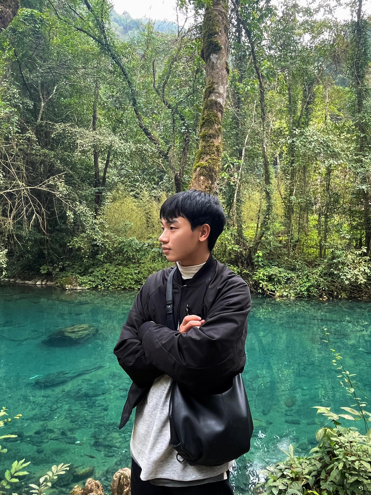

Tôi tên là Nguyễn Thành Ký năm nay tôi 24 tuổi, hiện tại tôi đang nỗ lực để trở thành nhà phát triển phần mềm
Sinh ra và lớn lên tại Tuyên Quang - Việt Nam sở thích chạy bộ, và chơi game esport

8/2023 tốt nghiệp đại học thành đô ngành công nghệ thông tin
Trong ngành phát triển phần mềm mới có chút hiểu biết cơ bản về html
Còn những kinh nghiệm khác khá nhiều nhưng k liên quan nên tôi xin phép không liệt kê ở đây
Cho đến hiện tại thì kĩ năng tôi tự hào nhất và cũng đáng hổ thẹn nhất là kĩ năng tự học
Rõ ràng có thể ngồi học 16 tiếng 1 ngày nhưng từ lâu không duy trì thói quen nên quá dễ sao nhãng
Mong ngày nào đó tôi có gì đó để cập nhật cho bạn xem